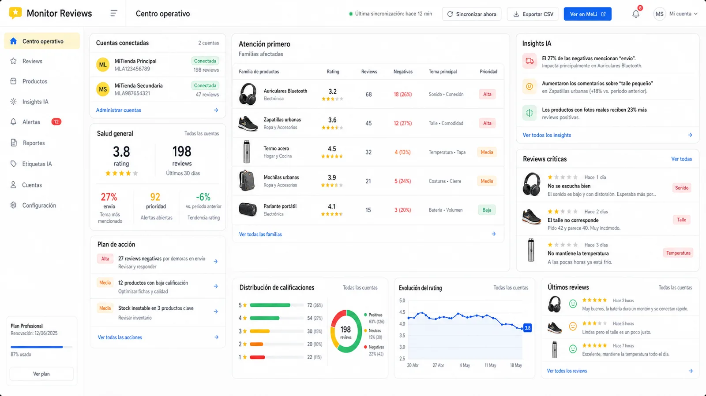

Monitor de Reviews
Reviews dispersas convertidas en una superficie de seguimiento por producto.
- Rol
- Producto, backend, sync y seguridad
- Restricción
- API sin webhook dedicado y entidades compartidas
- Entrega
- Seguimiento centralizado de reviews

Mercado Libre tenía estadísticas, pero no esta vista.
Un seller podía consultar métricas, pero no tenía un lugar centralizado para leer las reviews de sus publicaciones y seguir cómo evolucionaba la percepción de cada producto.
La grieta
Las reviews contienen señales cualitativas que no encajan bien en una pantalla de estadísticas agregadas.
La dificultad
La API exige polling y puede compartir reviews entre catálogos o familias. Centralizar sin mezclar productos requiere modelado propio.
El alcance se concentró en una pregunta precisa.
-
Seguir percepción, no toda la operación
El producto se enfoca en qué dicen las reviews y cómo cambia la salud percibida de los productos.
01 -
Sincronizar con varias cadencias
Polling diario, sync al login cuando está stale y actualización manual compensan la falta de webhook.
02 -
Aislar cuentas y entidades
OAuth multi-cuenta, tokens renovables y modelos propios evitan mezclar usuarios, publicaciones y familias.
03
Una base técnica para cerrar el hueco entre reputación y producto.
Backend y API
Datos
Jobs y sync
Frontend
Infra
Producto
Resultado. Información cualitativa convertida en seguimiento operativo, sin esconder la complejidad de la plataforma externa.